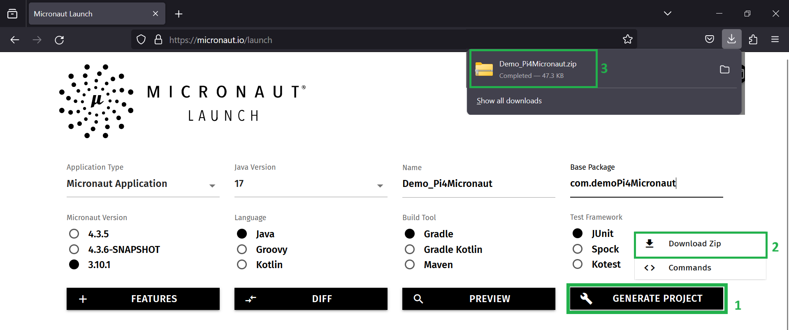
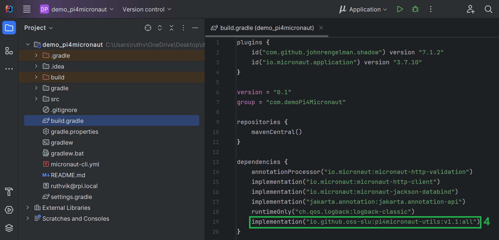
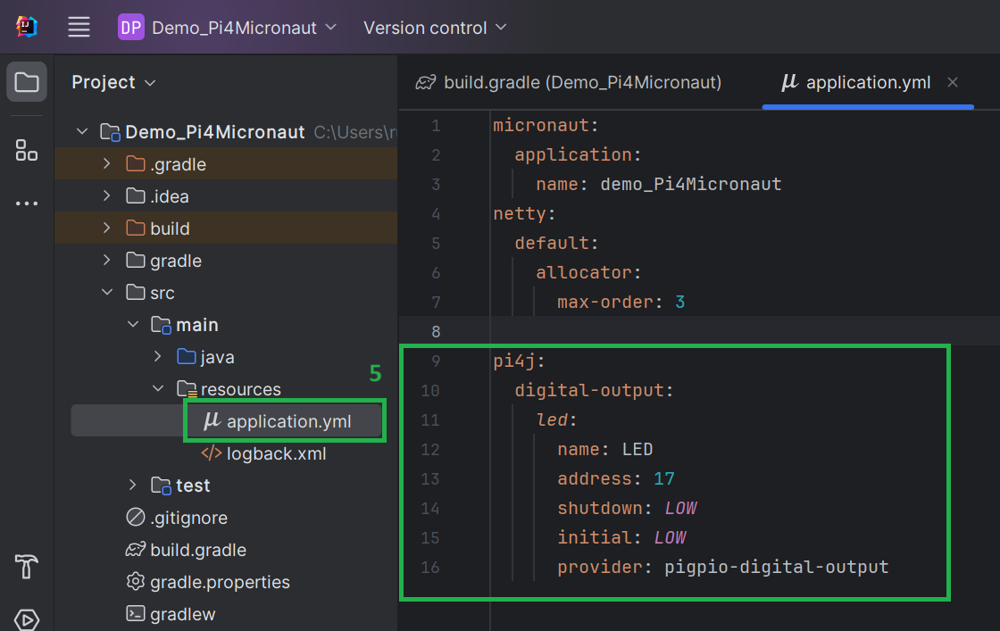
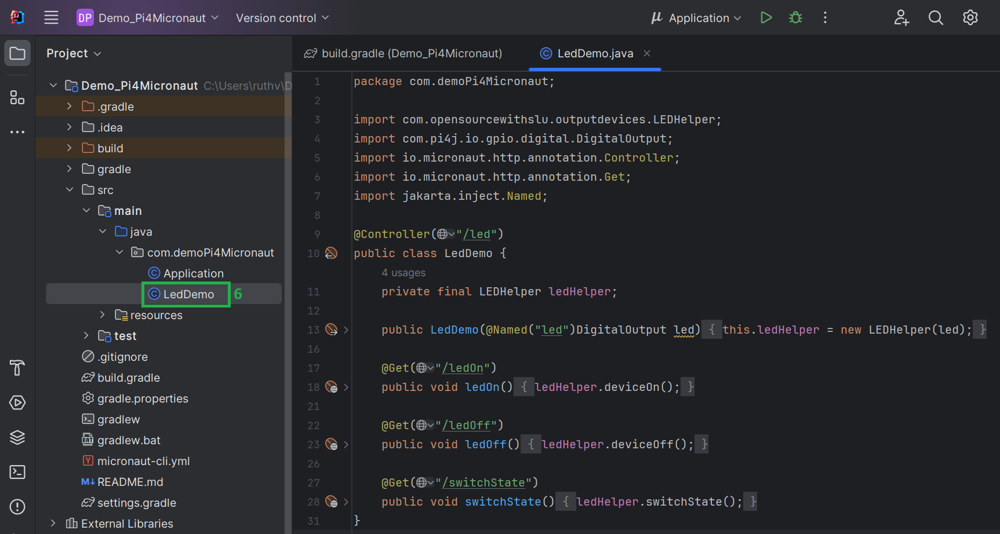

How to use the Pi4Micronaut library
This section will walk you through the process of creating a basic Micronaut application and the configuration for developing with Pi4Micronaut. As a demo, this will include the configuration and sample code.
Creating A Micronaut Project
-
Go to Micronaut’s website here.
-
Make sure you have selected Micronaut version 3.10.1 or lower with Java version 17.
-
Click Generate Project and download the zip.
-
Export the contents of the zip file and open it in IntelliJ or any IDE of your choice.
It should look like: 
Add Dependency
-
Go to the build.gradle file and find the dependencies.
-
Add the Pi4Micronaut dependency to the list.
implementation("io.github.oss-slu:pi4micronaut-utils:v1.0:all")It should look like: 
Setup Configuration
-
Go to the application.yml file and add the configuration of your circuit setup:
path: Demo_Pi4Micronaut/src/main/resources/application.yml
-
Create a new tree in the yml file as shown below.
pi4j: digital-output: led: name: LED address: 17 shutdown: LOW initial: LOW provider: pigpio-digital-outputHere we are specifying a led as a digital output type with name LED, address 17, etc. For more information on the LED setup guide, see our documentation here.
It should look like: 
Creating Component Class
-
Create a new class in the project’s src directory as shown below.
path: Demo_Pi4Micronaut/src/main/java/com.demoPi4Micronaut
This is where you use the implemented LED functions from Pi4Micronaut library.
-
Our example code is:
